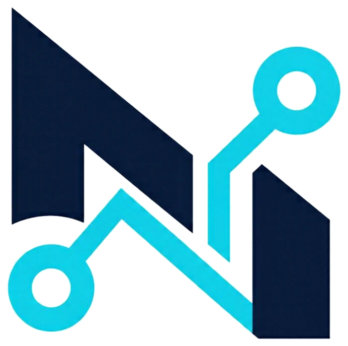

Detect
Learn what the computer can realistically support — processor, memory, storage and network.

NKABE IncINTELLIGENT COMPUTING INFRASTRUCTURE
NKABE is building software that helps turn underused computers into practical, locally controlled infrastructure — starting with nKABE OS.
THE PROBLEM
Useful computers are often left idle, underused, or considered obsolete — while schools, small businesses and local organizations still need affordable ways to host services, store information and run essential workloads.
We are exploring a more resourceful path: make the computers people already have easier to assess, activate, deploy and manage.
FLAGSHIP PRODUCT
An offline-first operating system in development to help turn existing desktops and laptops into useful local infrastructure — without requiring a new computer for every job.
Intelligent infrastructure for the computers you already own.
nKABE OS is being built around a clear sequence: understand the machine, match it to a practical role, deploy the right configuration and make day-to-day operation easier to see and manage.
Identify the computer's capabilities and constraints before deployment.
Prepare a machine for a defined role such as local storage or services.
Bring key local system functions into a unified management experience.
THE APPROACH
Start with the hardware available. Match it to a real need. Keep the first deployment understandable — then expand capability as the product matures.
Learn what the computer can realistically support — processor, memory, storage and network.
Turn hardware information into a clear starting point for a useful deployment.
Guide setup toward a defined local role, with offline-first operation as a core principle.
Make system health and core functions easier to understand, maintain and recover.
WHY IT MATTERS
Help organizations explore local computing infrastructure without assuming every use case begins with buying brand-new equipment.
Support local storage and services where control, access and dependable operation matter.
Give underused computers a clearer path to a second, useful role when their capabilities allow it.
These are the intended outcomes we are developing toward; their scale will be measured through pilots and real deployments.
WHERE WE START
Building from Ghana, with a longer-term ambition to serve organizations across Africa and other resource-constrained markets.
PRODUCT ROADMAP
We are sequencing the platform so reliability comes before scale.
Refine setup, hardware compatibility, recovery and the operator experience.
Test repeatability with real users, real machines and documented outcomes.
Explore lifecycle updates, remote management and optional cloud services after the core is proven.
THE COMPANY
NKABE is building technology to make computing resources more useful, accessible and manageable. nKABE OS is the first product and the proving ground for a broader infrastructure platform.
Founder-led · Building in Ghana · Africa-focused ambition
BUILD WITH US
We’re preparing for early pilot conversations with organizations and ecosystem partners interested in affordable local computing infrastructure.
For current contact details, use the founder’s direct contact information provided with the relevant introduction or application.